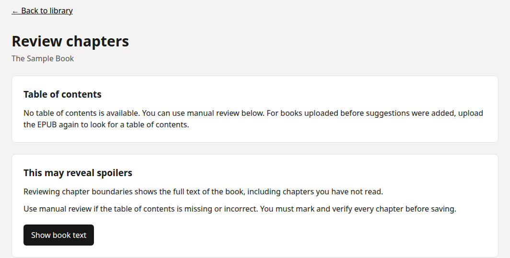
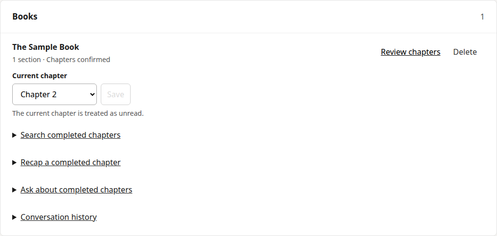
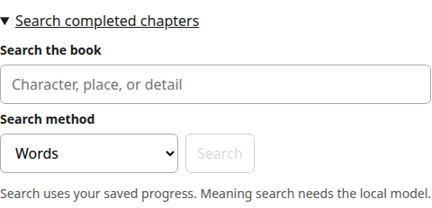
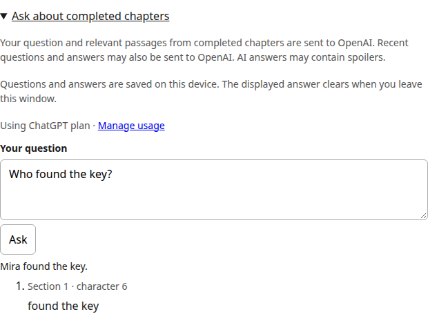

Bring your book.
Import an EPUB and review its suggested chapter boundaries. Nothing becomes a confirmed chapter until you save it.

Spoiless
A local-first EPUB app for questions about the chapters you have finished, while the rest stays unread.
See how to run itIn development · Screens show sample data

Spoiless uses your saved reading progress to decide which parts of a book can be searched. The chapter you are reading is treated as unread.
Chapter 1 is available for questions. Chapter 2 and later stay unread.
Import an EPUB and review its suggested chapter boundaries. Nothing becomes a confirmed chapter until you save it.

Search completed chapters by words, or use local semantic search after setting up its model. Your book stays on your computer for search.

Ask a question or request a recap. Answers include quotes matched against the supplied text, and the app withholds citations it cannot verify.

Spoiler protection reduces risk; it cannot guarantee that an AI answer is correct or spoiler-free. A model can still invent details or draw on outside knowledge.
When you ask for an AI answer, your question, relevant completed passages, and recent conversation may be sent to OpenAI. Books, progress and history are stored locally.
Sign-in and sign-out have been manually tried. Real-account model access and AI inference are not yet verified.
Explore the code, setup instructions, and the work still ahead.
Explore the project